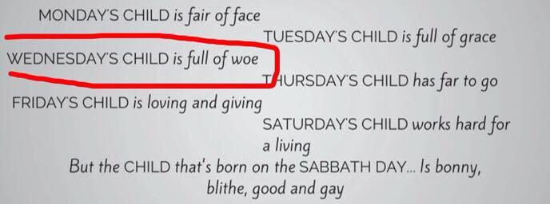

Well, mainly because it rhymes, but also mainly because of the poem below:
I was born on Wednesday November 8, 1995, and this nursery rhyme turned out to be prophetic. I am indeed full of woe. I figured I might as well write about them as my friends are tired of hearing me complain. So, reader, I hope you join me on this journey of self-pity.
Please feel free to go to the "About" section if you want to know more about me or holler at me. I'll probably holler back (I am perpetually lonely). Click on "Blog" if you want to read some personal anecodotes, short stories, and articles that I wrote. I apologize that there's only one post for now! More to come soon!